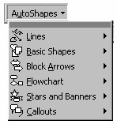

3. Membuat gambar
Mungkin Anda belum puas dengan gambar-gambar clip art yang disediakan
FrontPage XP. Barangkali Anda memiliki bakat seni, FrontPage XP menyediakan
sarana untuk mengembangkan talenta Anda ini. Buka saja toolbar Drawing, di sana
ada beberapa peralatan gambar yang bisa Anda gunakan.
masing tombol toolbar bisa Anda simak pada Tabel 6.2.
Tabel 6.2 Tombol toolbar Drawing
3.1 Menggambar manual
Untuk menghasilkan gambar, ik uti langkah berikut ini:
1. Tampilkan halaman yang akan diisi gambar.
2. Klik tombol Drawing ( ), tampil toolbar Drawing.
3. Klik alat gambar (misalnya Line).
4. Kemudian bawalah penunjuk mouse ke bidang kerja lalu klik dan drag.
Lokasi mulainya drag dan lokasi pelepasan drag merupakan titik awal dan
titik akhir bentuk gambar.
5. Untuk menggambar bujursangkar yang digunakan adalah tombol Rectangle.
Agar didapatkan ukuran keempat sisinya sama persis, pada waktu klik dan
drag tekanlah tombol SHIFT pada keyboard.
6. Demikian juga untuk mendapatkan bentuk lingkaran yang benar-benar bulat
(tidak elips), setelah klik tombol Ellips, sambil menekan Shift lakukan klik
dan drag.
Berikut ini contoh hasil menggambar manual:
Gambar 6.16 Contoh hasil menggambar
3.2 Mengambar dengan Autoshape
Menggambar bentuk yang agak rumit dengan alat bantu manual (dan sederhana)
dapat menjengkelkan. Untuk menghindari keadaan ini FrontPage XP menyediakan
objek gambar yang telah jadi, sehingga Anda tinggal memakainya. Koleksi objek ini
dinamakan AutoShape. Cara memakainya, ikuti langkah-langkah berikut ini:
1. Klik lokasi penyisipan objek gambar.
2. Klik tombol AutoShapes pada toolbar Drawing, Gambar 6.17.

Gambar 6.17 Koleksi AutoShapes
3. Masing-masing item yang ada pada AutoShapes tersebut masih memiliki
anggota yang cukup lengkap, antara lain:
§ Lines. Dengan koleksi Lines ini kita bisa membuat berbagai macam
garis. Gambar 6.18 kiri.
Gambar 6.18 Pilihan Lines, Basic Shapes dan Block Arrows
• Basic Shapes, menyediakan 32 buah bentuk dasar yang sering kita
perlukan. Gambar 6.18 tengah.
• Block Arrows. Jika Anda akan membuat diagram yang menyatakan
proses, biasanya akan memerlukan gambar anak panah dengan berbagai
variasi. Gambar 6.18 kanan.
• Flow Chart. Membuat Flow Chart bukan hal yang sulit dengan
menggunakan FrontPage XP, karena semuanya telah disediakan.
Gambar 6.19 kiri.
Gambar 6.19 Flow Chart, Sta rs and Banners dan Callouts
• Stars and Banners. Menggambar banner (lembar pengumuman yang
memanjang) mudah saja dengan FrontPage XP. Demikian pula dengan
gambar bintang yang sering kita pakai untuk menyatakan perhargaan.
Gambar 6.19 tengah.
• Callouts, adalah sarana untuk memberi keterangan dari suatu objek.
Telah tersedia berbagai jenis Callout yang tinggal pakai seperti Gambar
6.19 kanan.
• Action Button. Action button adalah tombol yang bisa dipakai untuk
melakukan kegiatan tertentu apabila tombol ditekan. Gambar 6.20.
Gambar 6.20 Action Button
4. Cara memakai koleksi di atas sama dengan cara memakai alat gambar, yaitu:
a. Klik salah satu koleksi (misalnya CallOut)
b. Kemudian bawalah penunjuk mouse ke bidang kerja, lalu klik dan
geser. Lokasi mulainya menggeser dan lokasi melepaskan mouse
merupakan titik awal dan titik akhir bentuk gambar.
3.3 Mengganti Autoshape
Anda dapat mengganti bentuk autoshape yang telah ada menjadi bentuk yang lain
dengan cara:
1. Pilihlah bentuk yang akan diganti.
2. Kemudian klik tombol Draw ( ) pada toolbar Drawing. Akan muncul
menu.
3. Lalu dari menu pilihlah Change AutoShape akan tampil pilihan autoshape.
4. Kemudian klik bentuk baru yang Anda inginkan.
Selagi Anda menggambar objek, tekan salah satu atau kedua tombol Ctrl untuk
menggambar objek dari titik tengahnya, tombol Shift untuk menggambar bentuk
yang mempunyai dimensi tetap seperti dalam kumpulan bentuk AutoShape.
3.4 Menambah teks ke AutoShape
Anda dapat menambahkan teks pada objek yang Anda gambar. Tidak seperti
melapisi objek dengan kotak teks, teks yang Anda ketikkan akan tetap berada pada
objek tersebut jika Anda memindahkan objek itu. Untuk mengetikkan teks pada
gambar, ikutilah langkah berikut:
1. Klik pada objek AutoShape yang akan diberi teks.
2. Tuliskan teks Anda, misalnya: “Sebagai seorang pemimpin, seseorang harus
mempunyai visi jauh ke depan sehingga mampu membuat keputusan yang
benar dalam menjalankan misi yang diembannya….”. Selagi mengetik, teks
tersebut akan tampil dalam satu garis mendatar pada objek. Contoh hasil
penulisan lihat Gambar 6.21.
Gambar 6.21 Contoh penulisan teks pada AutoShape
Copyright © Herlan Lesmana
Created with the Freeware Edition of HelpNDoc: Free Web Help generator